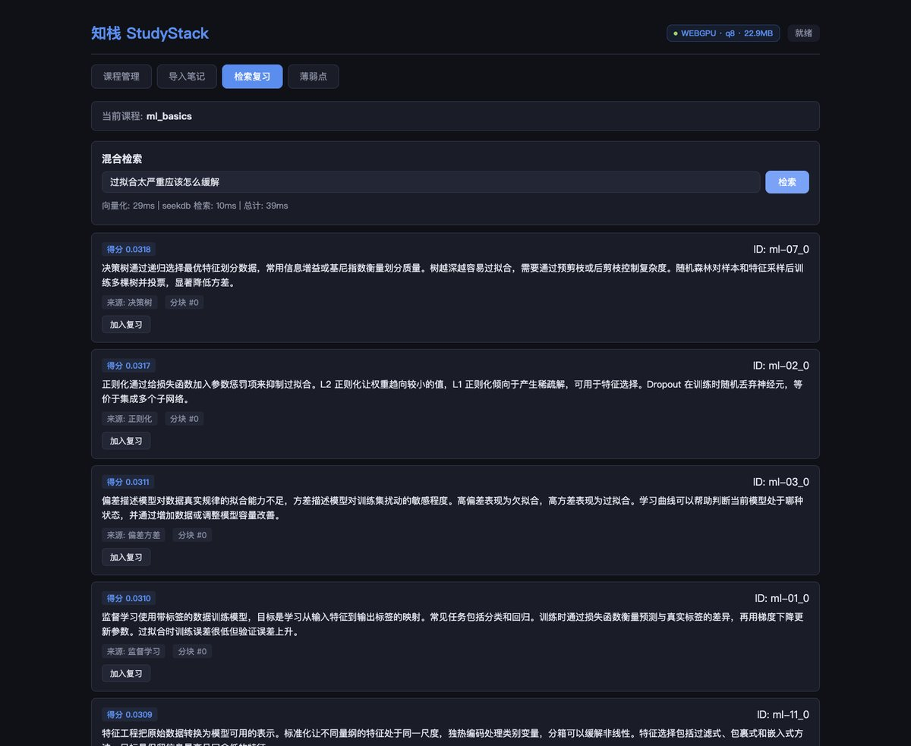
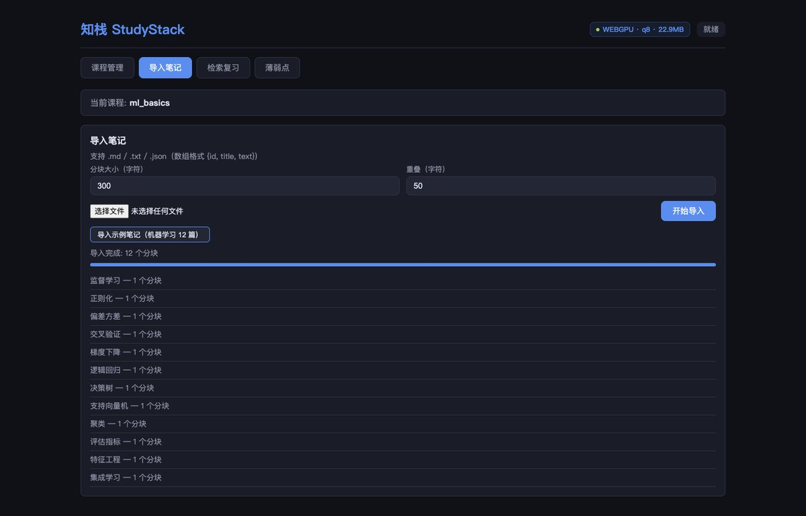
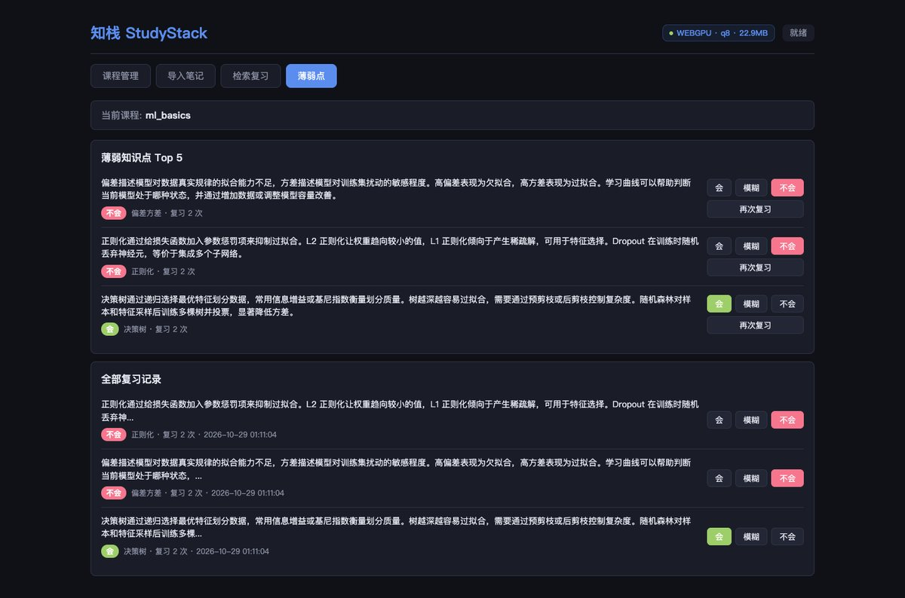
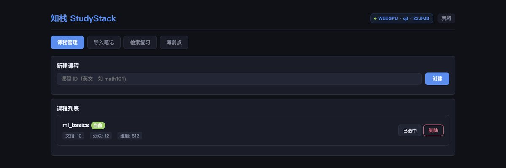

🔍
知识点找不到
笔记散在十几个 Markdown / TXT 里，只记得“好像在哪篇写过”，关键词又对不上原句。
知栈 StudyStack 是一个本地优先的课程笔记复习助手：导入 Markdown / TXT 笔记， 在浏览器里算好向量，交给 OceanBase seekdb 用一条 SQL 完成全文 + 向量的混合检索， 再把每次命中的知识点沉淀成掌握度，下次先复习薄弱点。

笔记散在十几个 Markdown / TXT 里，只记得“好像在哪篇写过”，关键词又对不上原句。
刷过的题、看过的段落没有留下痕迹，第二遍复习仍然从第一页开始。
课程笔记、实验数据往往不便上传；通用笔记软件又缺少库内的向量检索能力。
知栈的答案：本地解析 + 本地向量化 + 库内混合检索 + 可追踪的掌握度。
每门课一个 seekdb collection，新建 / 切换 / 删除，实时显示文档数、分块数与向量维度。
支持 .md / .txt / .json，按句子边界分块（大小、重叠可调），示例笔记一键导入。
全文 ngram + HNSW 向量 + RRF 融合全部在 seekdb 单条 SQL 内完成，应用层不重排。
结果可加入复习并标记 会 / 模糊 / 不会，薄弱点 Top 5 按掌握度排序，一键跳回原文。



向量在浏览器里算，检索在数据库里做。服务端只负责把参数装进 @search_parm，
再由 DBMS_HYBRID_SEARCH.GET_SQL 生成并执行真正的混合检索语句。
Web Worker 里跑 Transformers.js，模型 Xenova/bge-small-zh-v1.5，512 维 q8，
WebGPU 优先、失败降级 WASM。
把查询文本、查询向量与 RRF 参数写入 SET @search_parm，调用
DBMS_HYBRID_SEARCH.GET_SQL。
ngram 全文 + HNSW cosine 近邻 + RRF 融合在同一句 SQL 里，返回得分与原文。
命中结果写入 review_progress 表，薄弱点与复习次数都用 SQL 查询排序。
parm.query = { query_string: { fields: ['document'], query: cleanText } };
parm.knn = { field: 'embedding', k: 40, query_vector: queryVector };
parm.rank = { rrf: { rank_window_size: 64, rank_constant: 60 } };
parm.size = topK;
await c.execute('SET @search_parm = ?', [JSON.stringify(parm)]);
const rows = await c.execute(
`SELECT DBMS_HYBRID_SEARCH.GET_SQL('${table}', @search_parm) as q FROM dual`
);
// 执行生成的 SQL（嵌入式构建去掉 APPROXIMATE 走精确扫描，RRF 融合仍在库内）全文召回、向量近邻、融合排序如果拆到应用层，就要把候选集反复搬进内存并自己实现 RRF。
seekdb 的 DBMS_HYBRID_SEARCH 把三件事压进一句 SQL，排序语义由数据库保证，应用层只做映射。
模型与笔记都不离开本机：模型由本地 /models 静态托管（allowRemoteModels=false），
服务端只收到向量与文本，天然规避了“笔记上传云端”的顾虑。
| 项目 | 结果 | 说明 |
|---|---|---|
| 模型加载 | WebGPU · q8 · 22.9MB | 顶栏常驻徽标，来自 Worker 上报的真实后端与体积 |
| 示例导入 | 12 个分块 | 12 篇机器学习笔记，每篇 1 个分块 |
| 查询向量化 | 29ms | 浏览器 Worker 内完成 |
| seekdb 混合检索 | 10ms | 单条 SQL：全文 + 向量 + RRF |
| 端到端 | 39ms | 输入问题到结果渲染 |
| 冒烟测试 | 15 项全 PASS | 建课、导入、增量、检索、掌握度、课程隔离 |
耗时随机器与浏览器波动；无 WebGPU 时自动降级 WASM，结果一致但更慢。
cd qoder/app
npm install
# 模型放到 app/models/Xenova/bge-small-zh-v1.5（约 159MB，q8 实际加载 22.9MB）
huggingface-cli download Xenova/bge-small-zh-v1.5 \
--local-dir models/Xenova/bge-small-zh-v1.5npm run dev # API 8787 + Vite 5173
open http://localhost:5173顶部出现 WebGPU · q8 · 22.9MB 即模型就绪。
ml_basics → 切换为当前课程过拟合太严重应该怎么缓解 → Top 3 命中 决策树 / 正则化 / 偏差方差命令行等价验证：node scripts/smoke.mjs，预期 All tests PASSED。